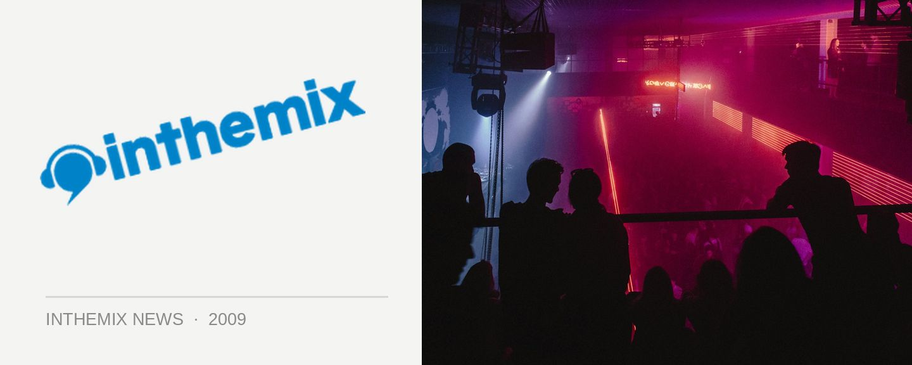

Defqon.1 lineup hits the streets!
The world’s very best hard dance festival will be coming to Australia in September, with the news dropping not long ago that Q-dance had secured the spectacular island venue that is the Sydney International Regatta Centre. Now the curtain has dropped on the massive lineup that will be featured at the party. Featuring over 30 internationals across five different stages, it’s a lineup that well and truly lives up to the Defqon.1 heritage and should have hard dance fans salivating at the prospect…
Defqon.1 Festival comes to the Sydney International Regatta Centre on Saturday September 19th. Tickets on sale now from tickets.q-dance.com.au, check out the lineup below…
Red – Hardstyle Main stage
Fausto
Brennan Heart
The Prophet
Davide Sonar
Nitrouz
The Beholder
Donkey Rollers
Max Enforcer
Noisecontrollers
Deepack
Zany
Alpha2
MC Ruffian
Orange – Hard Trance Stage
Jowan
K90
Proteus
Bio Weapon
Amber Savage vs Nik Fish
Alex Kidd
DR Willis
Joop
Mark Sherry
Vandall
MC V
Black – Hardcore Stage
The Viper
Spellbound
Evil Activities
Decipher
Noize Suppressor
The Playah
Endymion
Kasparov (live)
Art of Fighters
MC D
Grey – Old School & Early Rave
Chester
The Viper VS Frank-E & Mars-L
The Prophet
Pavo
Neophyte
Gizmo
Paul Holden
Sasha Vatoff
Public Domain
MC Losty
Purple – New Talent
Nathan Cryptic v Imperial
Suae v Pulsar
Dexi v Daniel Velerium
Matrix v Xdream
Scotti G v Cantosis
Yennus v Soul T
S DEE v Audio Damage
DJ Comp Winner #1
DJ Comp Winner #2
DJ Comp Winner #3
DJ Comp Winner #4
MC Destiny
Want more Defqon.1 Festival info? Check out ITM’s Festival Page and stay tuned to the site in the leadup as we’ll be bringing you absolutely everything you need to know. In the meantime, check out that spectacular trailer one more time…